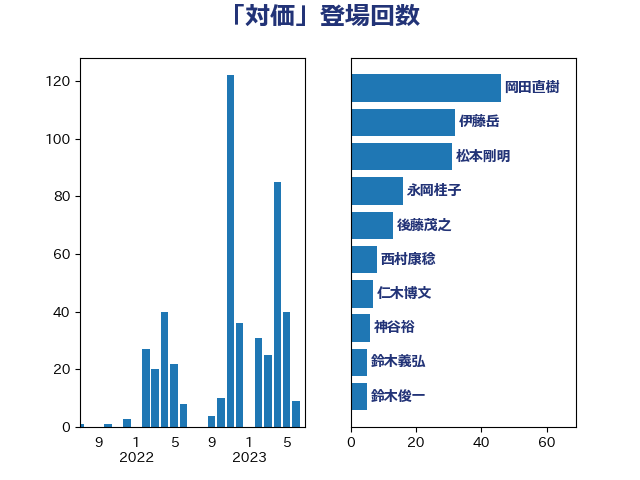

単語「対価」

| 三谷英弘 | 自由民主党 | 10 回 |
| 萩生田光一 | 自由民主党 | 10 回 |
| 吉良よし子 | 日本共産党 | 7 回 |
| 後藤田正純 | 自由民主党 | 6 回 |
| 上川陽子 | 自由民主党 | 5 回 |
| 山添拓 | 日本共産党 | 5 回 |
| 梶山弘志 | 自由民主党 | 5 回 |
| 仁木博文 | 無所属 | 4 回 |
| 斉藤鉄夫 | 公明党 | 4 回 |
| 横沢高徳 | 立憲民主党 | 4 回 |
| 中川正春 | 立憲民主党 | 3 回 |
| 山下貴司 | 自由民主党 | 3 回 |
| 岩本剛人 | 自由民主党 | 3 回 |
| 平木大作 | 公明党 | 3 回 |
| 本村伸子 | 日本共産党 | 3 回 |
| 武井俊輔 | 自由民主党 | 3 回 |
| 沢田良 | 日本維新の会 | 3 回 |
| 牧義夫 | 立憲民主党 | 3 回 |
| 田村憲久 | 自由民主党 | 3 回 |
| 古川禎久 | 自由民主党 | 2 回 |
| 安江伸夫 | 公明党 | 2 回 |
| 川合孝典 | 国民民主党 | 2 回 |
| 末松信介 | 自由民主党 | 2 回 |
| 森屋隆 | 立憲民主党 | 2 回 |
| 浮島智子 | 公明党 | 2 回 |
| 石川香織 | 立憲民主党 | 2 回 |
| 礒崎哲史 | 国民民主党 | 2 回 |
| 谷田川元 | 立憲民主党 | 2 回 |
| 重徳和彦 | 立憲民主党 | 2 回 |
| 鈴木俊一 | 自由民主党 | 2 回 |
| 鈴木義弘 | 国民民主党 | 2 回 |
| ながえ孝子 | 無所属 | 1 回 |
| 世耕弘成 | 自由民主党 | 1 回 |
| 中曽根康隆 | 自由民主党 | 1 回 |
| 中谷元 | 自由民主党 | 1 回 |
| 佐藤茂樹 | 公明党 | 1 回 |
| 吉田統彦 | 立憲民主党 | 1 回 |
| 和田義明 | 自由民主党 | 1 回 |
| 城井崇 | 立憲民主党 | 1 回 |
| 堀井巌 | 自由民主党 | 1 回 |
| 塩川鉄也 | 日本共産党 | 1 回 |
| 太田房江 | 自由民主党 | 1 回 |
| 奥野総一郎 | 立憲民主党 | 1 回 |
| 小林鷹之 | 自由民主党 | 1 回 |
| 小田原潔 | 自由民主党 | 1 回 |
| 山口那津男 | 公明党 | 1 回 |
| 山際大志郎 | 自由民主党 | 1 回 |
| 岡本あき子 | 立憲民主党 | 1 回 |
| 後藤祐一 | 立憲民主党 | 1 回 |
| 後藤茂之 | 自由民主党 | 1 回 |
| 斎藤アレックス | 国民民主党 | 1 回 |
| 新妻秀規 | 公明党 | 1 回 |
| 有村治子 | 自由民主党 | 1 回 |
| 杉久武 | 公明党 | 1 回 |
| 柳本顕 | 自由民主党 | 1 回 |
| 河野太郎 | 自由民主党 | 1 回 |
| 浅田均 | 日本維新の会 | 1 回 |
| 浜田聡 | NHK党 | 1 回 |
| 牧島かれん | 自由民主党 | 1 回 |
| 田中健 | 国民民主党 | 1 回 |
| 田村貴昭 | 日本共産党 | 1 回 |
| 石橋通宏 | 立憲民主党 | 1 回 |
| 秋野公造 | 公明党 | 1 回 |
| 竹内真二 | 公明党 | 1 回 |
| 篠原孝 | 立憲民主党 | 1 回 |
| 紙智子 | 日本共産党 | 1 回 |
| 羽生田俊 | 自由民主党 | 1 回 |
| 自見はなこ | 自由民主党 | 1 回 |
| 舩後靖彦 | れいわ新選組 | 1 回 |
| 茂木敏充 | 自由民主党 | 1 回 |
| 菅義偉 | 自由民主党 | 1 回 |
| 藤木眞也 | 自由民主党 | 1 回 |
| 西村康稔 | 自由民主党 | 1 回 |
| 赤木正幸 | 日本維新の会 | 1 回 |
| 赤澤亮正 | 自由民主党 | 1 回 |
| 近藤和也 | 立憲民主党 | 1 回 |
| 道下大樹 | 立憲民主党 | 1 回 |
| 野上浩太郎 | 自由民主党 | 1 回 |
| 金子恭之 | 自由民主党 | 1 回 |
| 金村龍那 | 日本維新の会 | 1 回 |
| 長友慎治 | 国民民主党 | 1 回 |
| 長坂康正 | 自由民主党 | 1 回 |
| 阿部司 | 日本維新の会 | 1 回 |
| 鬼木誠 | 立憲民主党 | 1 回 |
| 黄川田仁志 | 自由民主党 | 1 回 |